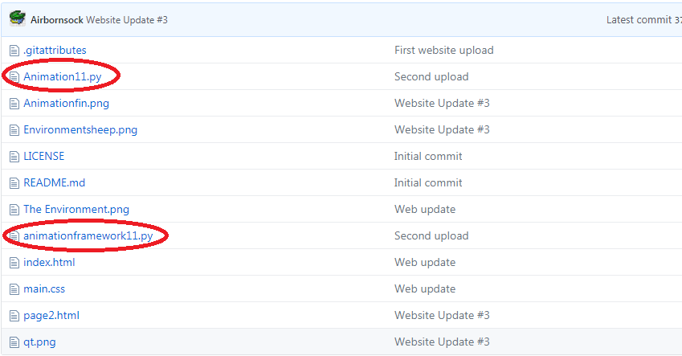
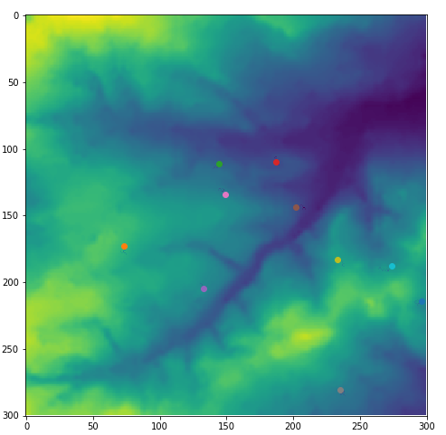
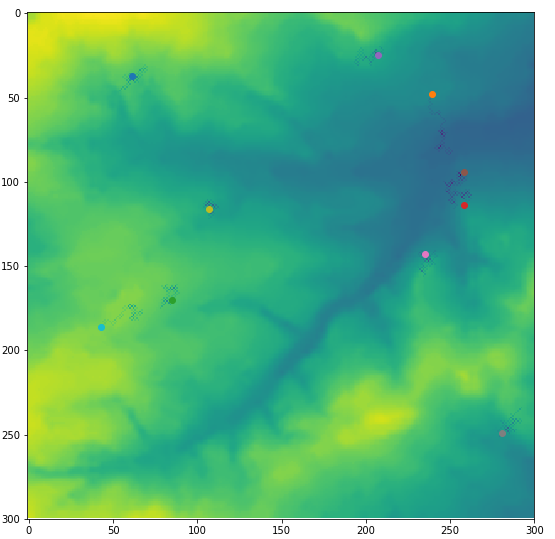
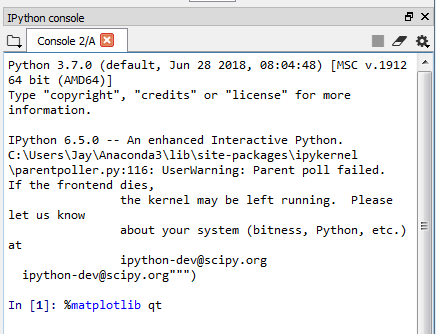

Firstly, in order to view my code, make sure your computer is able to read python scripts. I have used "Anaconda" a free open source platform which enables python and R distribtuion. It includes over 100 Python libraries, and "Spyder", the core software for cross platform scienctific programming and manipulation.
This can be downloaded free at:
https://www.anaconda.com/download/
My code can be found in my Github Repository at:
https://github.com/Airbornsock/airbornsock.github.io
Please load files "Animation11.py" and "animationframework11.py" into Spyder or equivalanet software to view the animation.

The code in which I have created, in its simplest description, creates 10 agents (which we are going to call sheep), and randomly places them within our environment (provided by the univeristy as a simple text file), which we read in using "csv.reader". The sheep are randomly placed into the environment, and randomly move around the area consuming grass (data).
Above is the envionment plotted by matplotlib, using "matplotlib.pyplot.imshow(environment)"

Using matplotlibs scatter diagram function "matplotlib.pyplot.scatter(agents[i]._x,agents[i]._y)" we can now plot our sheep (agents) into our environment.

The grazing process can be put into animation using "matplotlib.animation". The sheep will stop grazing when a value of "0.01" has been found, (this can easily be changed, see line 77 in the "Animation11.py" file) The darkened areas surrounding the agents are the areas which have been "eaten" or grazed. This is the current extent as to what this code can do. In the future I may implement breeding of the sheep, and possibly wolves which will come in and attack the sheep too.
IMPORTANT: If the animation fails to load, please type "%matplotlib qt" into the console, like so:
